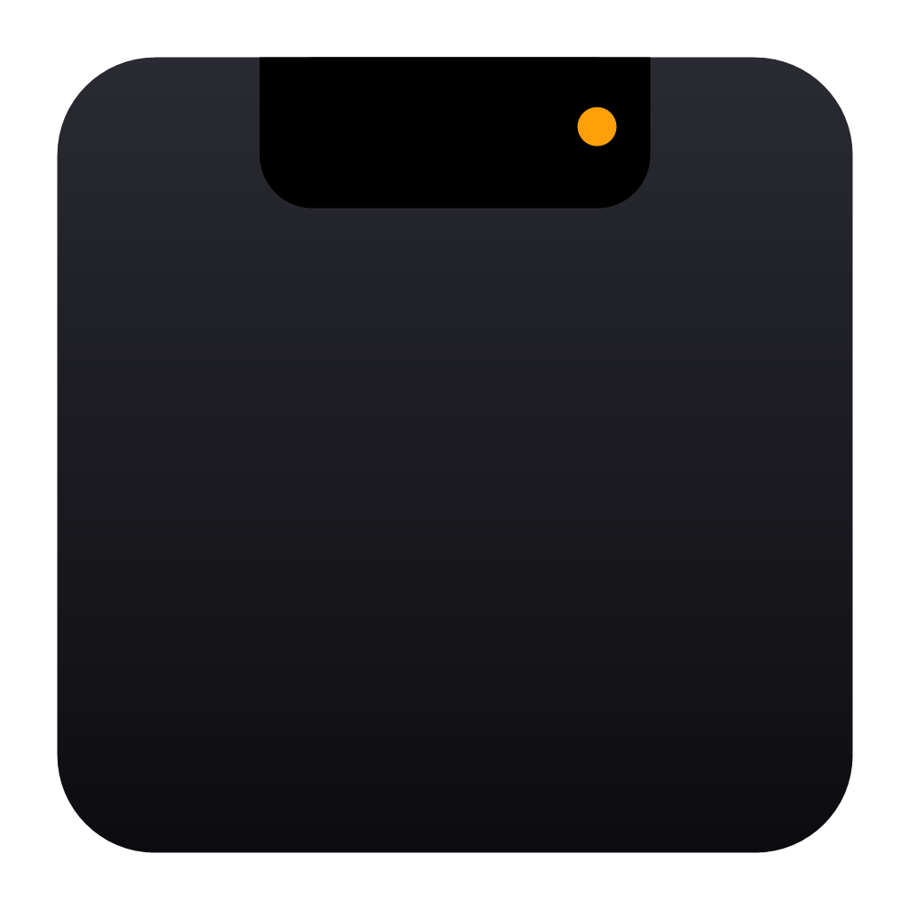

14:48デザインレビューあと12分☀ 19°
予定を、先回りして。
30 分以内に始まる予定があると、ノッチが横に伸びてタイトルと残り時間を表示。進行中なら「残り◯分」に変わります。

NotchyDemos
機能を選ぶと、その動きを再生します。画面の中のノッチには、直接カーソルを乗せて操作することもできます。
Features
いつもは時刻と気温だけ。必要なときにだけ、そっと広がります。
30 分以内に始まる予定があると、ノッチが横に伸びてタイトルと残り時間を表示。進行中なら「残り◯分」に変わります。
ノッチの外側はクリック透過。全画面のウィンドウでも、タブやボタンはいつもどおり押せます。
Calendar API から直接取得し、5 分ごとに更新。権限は読み取りのみ（calendar.readonly）。表示するカレンダーも選べます。
Open-Meteo を使った現在の天気、12 時間予報、7 日間予報。地域は都市名で検索して切り替え。
表示するディスプレイを設定から選択。解像度や拡大率（DPI）の違いにも対応し、選択は記憶されます。
既定の出力デバイスで鳴っているアプリごとに、音量とミュートをその場で調整。再生中のアプリにはイコライザーが揺れます。行はドラッグで並べ替えられ、順番は記憶されます。
ウィンドウ制御やカーソル監視、OAuth は Rust で。画面はフレームワークを使わない素の HTML/CSS/JS。開閉は 0.55 秒のばねのようなカーブで。
Privacy
Notchy は、ユーザー本人の Google カレンダーの予定を読み取って表示するためだけに
Google アカウントへのアクセス（calendar.readonly）を求めます。
予定の作成・変更・削除は行いません。取得したデータはユーザーの PC の中でだけ使われ、
開発者を含む第三者に送信されることはありません。
詳しくは プライバシーポリシー をご覧ください。
Get started
画面上部の中央に、小さなノッチが現れます。Windows 10 / 11（64bit）、WebView2 が必要です。
設定タブで都市名を検索。天気の取得に API キーは要りません。
表示したいカレンダーにチェック。iCal URL を追加することもできます。
Notchy — Windows のためのノッチ型ウィジェット